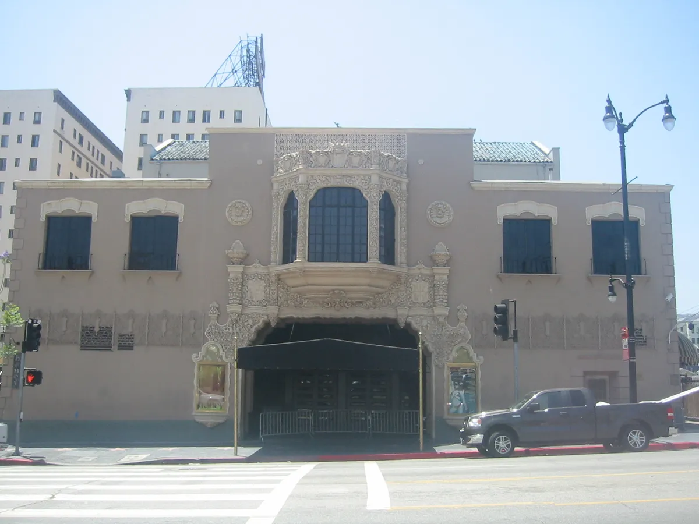
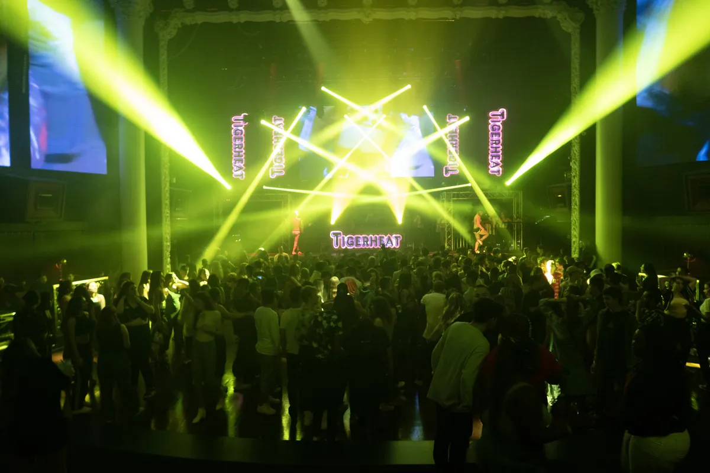
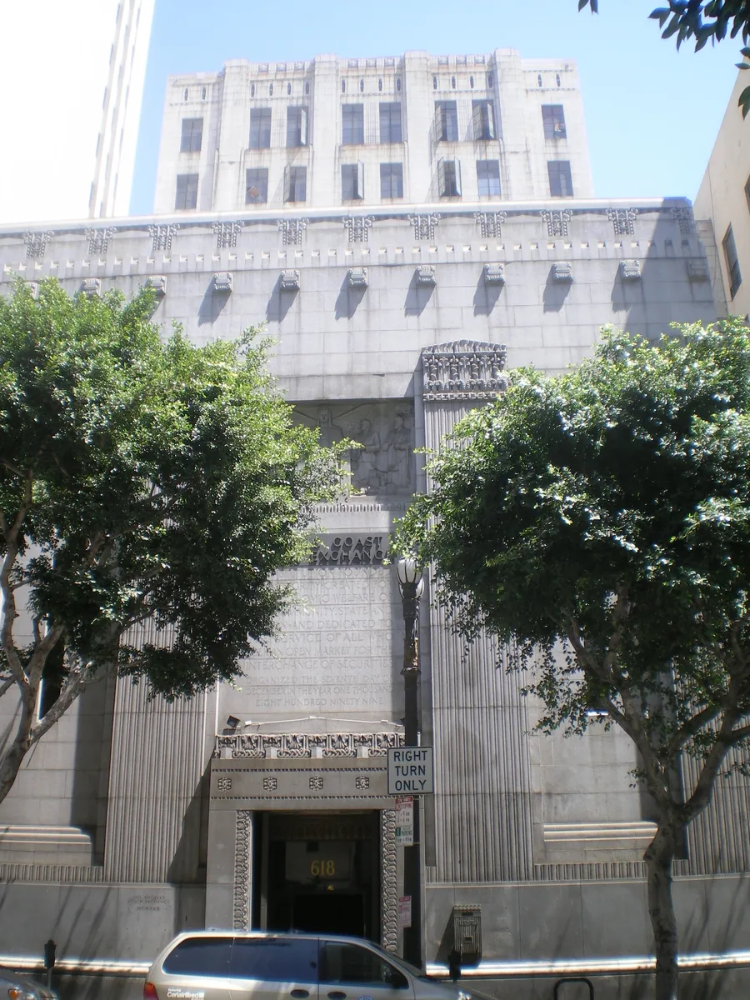
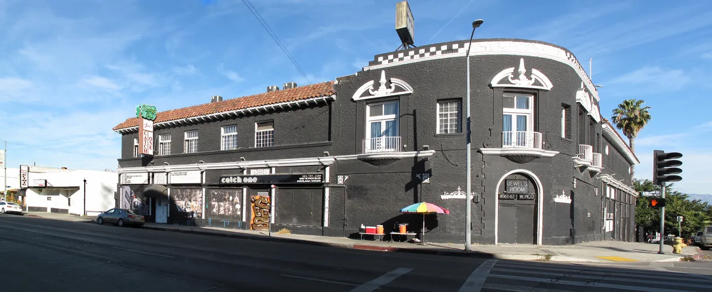
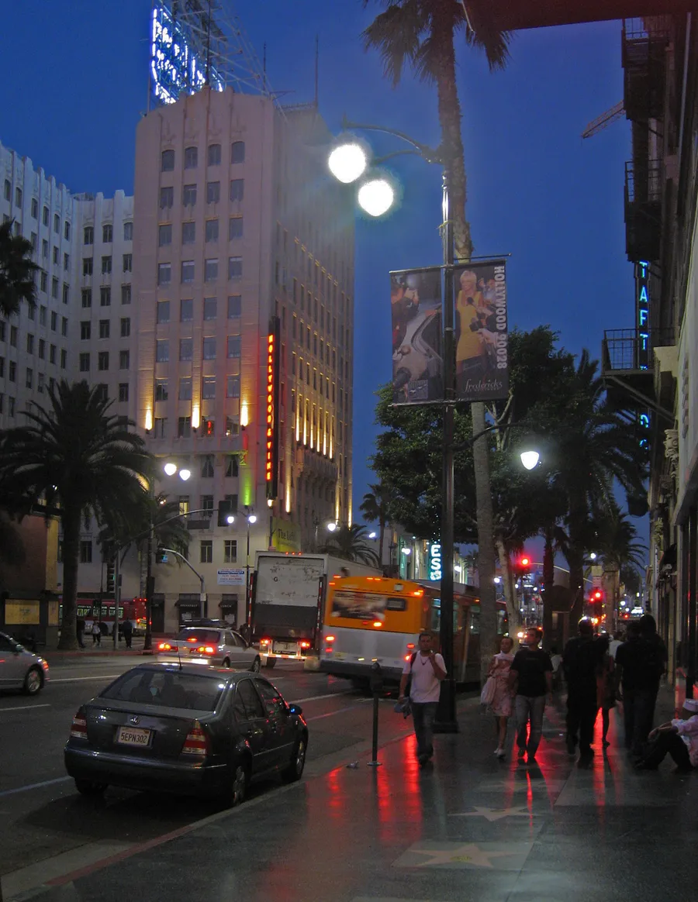

Los Angeles clubs
The best clubs in Los Angeles, from Avalon to Exchange LA and Sound
A 1927 theatre, a stock exchange and a house room in Hollywood: the dance clubs of Los Angeles, and the company behind most of them.
Plan your visit
Where to go out in Los Angeles.
The nights split between Hollywood and Downtown. In Hollywood, Avalon is at Hollywood and Vine, Academy LA is on Hollywood Boulevard, and Sound is a few streets away on Las Palmas. Downtown, Exchange LA is on Spring Street, and Lot 613 is further east in the Arts District. Catch One is west of Downtown, on Pico Boulevard.
Outside the big rooms, Time Out points to weekly nights in Echo Park: Dub Club at the Echoplex on Wednesdays, and Part Time Punks at the Echo, running since 2005. The city is spread out, so plan the ride home before the night starts. Check each club's ticket page for covers, age limits and dress codes, which vary by night.
Clubs built around the sound.
Search for LA clubs and the answers mix three different nights: bottle-service rooms in West Hollywood, hip-hop clubs, and the dance clubs where a DJ booking is the reason to go. The first two are easy to find. The third is what follows.
Los Angeles clubs for dance music cluster in two places. Hollywood has the old theatres and the house rooms, within a few streets of each other. Downtown has the Stock Exchange building and, further east, the warehouses. Behind most of the big rooms is one company, Insomniac, which started throwing raves in the city in the 1990s and now runs the clubs where most touring DJs play.
Avalon and the Hollywood Palace.
Avalon Hollywood stands at 1735 Vine Street, near the corner of Hollywood and Vine and across the road from the Capitol Records Building. It opened on 24 January 1927 as the Hollywood Playhouse, a theatre. The building changed names several times, including the El Capitan and the Jerry Lewis Theatre, and from 1964 it was the Hollywood Palace, where ABC filmed a variety show. DJ Mag notes that the Beatles made their West Coast debut there that year.

It was sold in 1978 and reopened as The Palace, a music venue: the Ramones played their final show there on 6 August 1996. In September 2002 it was bought again and renamed Avalon, and from 2004 its club night, Avaland, brought in the DJs who defined the big-room trance and progressive house era: Tiësto, Sasha, John Digweed and Paul Oakenfold.
Avalon is still the room for that sound. DJ Mag placed it at number 64 in its Top 100 Clubs for 2026, with a Void Acoustics system, and in 2025 Eric Prydz played his 20 Years of Pryda show there. Insomniac bought the club in September 2025, its first change of ownership in 50 years, according to DJ Mag. Avalon also hosts Tongue Pop, an LGBTQ+ series, and Tigerheat on Thursdays.

Exchange LA and the Stock Exchange building.
Exchange LA is at 618 Spring Street, in the building where the Los Angeles Stock Exchange traded from 1931 to 1986. The building has been a Historic-Cultural Monument of the city since 3 January 1979. A nightclub called The Stock Exchange opened there in the late 1980s, and Exchange LA opened in 2010 after a renovation of about $5 million.

DJ Mag describes four floors over 25,000 square feet, and ranked the club 48th in the world in 2026. It closed briefly in 2024 for renovation and reopened with a 360-degree video wall. Its newest series, Mutate, is for hard techno.
Insomniac and the LA rave.
Insomniac was founded by Pasquale Rotella, and its first festival in the city set the pattern for the rest. The Electric Daisy Carnival began in 1991 in Chino, run by Stephen Hauptfuhr, and Insomniac's first EDC was in 1997 at the Shrine Expo Hall in Los Angeles. From 2007 to 2010 it filled the Los Angeles Memorial Coliseum. The 2010 edition drew about 185,000 people, and a 15-year-old, Sasha Rodriguez, died after attending. The next year the festival moved to Las Vegas, where it has stayed: the EDC Las Vegas guide covers it.
Insomniac kept its clubs at home. It runs Academy LA, Exchange LA and Avalon, along with Create and the warehouse parties of Factory 93, so a large share of the big Los Angeles nightclubs book through one company.
The best clubs in Los Angeles now.
Of the nightclubs in Los Angeles, four made DJ Mag's Top 100 Clubs for 2026: Academy LA at 44, Exchange LA at 48, Avalon at 64 and Sound at 86. All five clubs that 6AM names for the city made its list of the 40 best house and techno clubs in North America: Academy LA, Lot 613, Sound, Exchange LA and Avalon.
| Club | Area | Music and character | Best for |
|---|---|---|---|
| Avalon HollywoodGoogle MapsResident Advisor | Hollywood and Vine | A 1927 theatre, Insomniac since 2025, DJ Mag 64 | Trance and progressive house, Tigerheat |
| Exchange LAGoogle MapsResident Advisor | Downtown, Spring Street | Four floors in the old Stock Exchange, DJ Mag 48 | Mainstage nights and hard techno at Mutate |
| Academy LAGoogle MapsResident Advisor | Hollywood Boulevard | About 1,000, LED ceiling, two patios, DJ Mag 44 | Big-room house and EDM |
| SoundGoogle MapsResident Advisor | Hollywood, Las Palmas | About 600, Funktion-One, since 2012, DJ Mag 86 | House and techno, Framework on Fridays |
| Lot 613Google MapsResident Advisor | Arts District | A warehouse with a courtyard | Underground house and techno |
| Catch OneGoogle MapsResident Advisor | Pico Boulevard | A dance club since 1973 | History, queer nights and concerts |
Academy LA is on Hollywood Boulevard, holds about 1,000 and is run by Insomniac. DJ Mag counts 145 LED panels in the ceiling, a Funktion-One system and two patios. Among the best clubs in LA, it is the one that books the widest range, from Korolova to Benny Benassi and Gryffin.
Sound and LA house music.
Sound opened in Hollywood in 2012, on Las Palmas Avenue, and holds about 600. DJ Mag says the name says it all: it has a Funktion-One system and 3D-mapped visuals, and books house and techno DJs such as Maceo Plex, CamelPhat and Max Styler. 6AM points to its California redwood interior and calls it the room for deep house and the underground.
Framework, the Friday party, has been at Sound since 2015, according to Time Out, with DJs including Danny Tenaglia, Soul Clap, Marques Wyatt, Stacey Pullen, Seth Troxler and Felix da Housecat. Framework also throws bigger events around the city: Hot Since 82 played its Knee Deep in Los Angeles night at Union Station.
Marques Wyatt, on that Framework list, is one of the city's own house DJs. This set was recorded for Beatport in Los Angeles in 2021.
Catch One.
Jewel's Catch One, at 4067 West Pico Boulevard, was opened in 1973 by Jewel Thais-Williams. It became the longest-running Black gay dance club in Los Angeles, and Sylvester, Whitney Houston and Madonna all appeared there.

In November 2015 the building was bought by new owners, the Edelsons. It was briefly called Union and is now Catch One again.
Warehouses and EDM clubs in Los Angeles.
The underground side of LA nightlife leans on warehouses. Lot 613, on Imperial Street, is a 6,000-square-foot warehouse with a courtyard of the same size, and LA Weekly named it the city's best club in 2016 and 2018. Lights Down Low, a Los Angeles party, brought Boys Noize to play for Boiler Room in 2021.
For EDM clubs Los Angeles has Academy LA and Avalon, both now Insomniac rooms, which book the big-room names and trance between the techno nights. Exchange LA covers both ends, with mainstage DJs on some nights and Mutate on others.
Hear Los Angeles before you go.

For other cities, the NYC clubs guide, the Chicago clubs guide and the Miami clubs guide cover the rest of the American circuit, and the best nightclubs in the world puts these rooms in a wider list.
Los Angeles clubs FAQ.
What are the best clubs in Los Angeles?
For house and techno, Avalon Hollywood, Exchange LA, Academy LA, Sound, Lot 613 and Catch One. Four of them, Academy LA, Exchange LA, Avalon and Sound, are in DJ Mag's Top 100 Clubs for 2026.
What are the best clubs in LA for house music?
Sound in Hollywood, home of the Framework party on Fridays, and Lot 613 in the Arts District.
What are the best nightclubs in Los Angeles for techno?
Exchange LA, with its Mutate series for hard techno, and Lot 613 in the Arts District.
What are the best EDM clubs in Los Angeles?
Academy LA and Avalon Hollywood. Both are run by Insomniac, the company behind EDC.
What is the oldest club in Los Angeles?
Catch One has been a dance club since 1973. Avalon's building is older, opened as a theatre in 1927, but it has been a club only since the 2000s.
Which clubs in LA are in old buildings?
Avalon is in a 1927 theatre on Vine Street, and Exchange LA is in the 1931 Los Angeles Stock Exchange building on Spring Street.
Sources.
Continue reading
Read next.
 Rave spots~8 min read
Rave spots~8 min readBerghain: Panorama Bar, Sound and Residents
Berghain explained: the former power station, Panorama Bar upstairs, Halle am Berghain, the Kantine, and the Ostgut Ton label.
Read article → Rave spots~8 min read
Rave spots~8 min readBest Clubs in Chicago: Nightclubs for House and Techno
Smart Bar, Podlasie, Spybar, Sound-Bar, Le Nocturne and Radius: the best clubs in Chicago for house and techno, and the Warehouse where house began.
Read article → Rave spots~11 min read
Rave spots~11 min readBest Clubs in NYC: Nightclubs for House and Techno
Nowadays, Basement, Public Records, Good Room and Elsewhere: the best clubs in NYC for house and techno now, and the history from the Loft to Output.
Read article → Rave spots~7 min read
Rave spots~7 min readBest Clubs in Tokyo: WOMB, Contact and the Ban on Dancing
WOMB, Contact, Vent and Circus Tokyo: the best clubs in Tokyo for house, techno and bass music, and the 68-year law against dancing that shaped them.
Read article →Want something to play while you read? Let the Selector pick a DJ set.